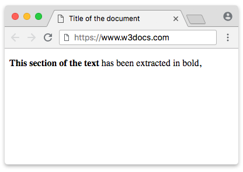

A tag <b> é usada em HTML para deixar o texto em negrito. Ela destaca o conteúdo visualmente, mas sem dar ênfase semântica, diferente da tag <strong>. É útil quando você quer apenas destacar algo no texto de forma visual.
<p>Este é um texto com a tag <b></b>: <b>negrito</b>.</p>
 Link para a página do W3Schools sobre o tema Um outro link complementar (exemplo: vídeo, artigo)